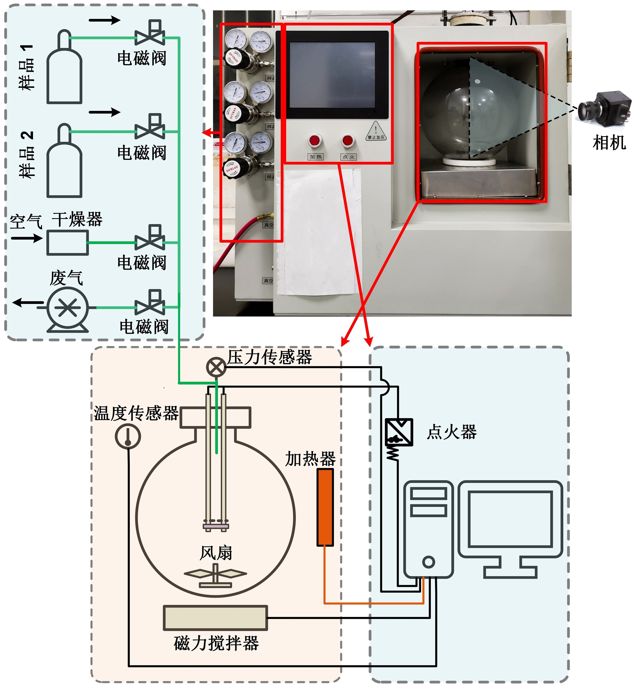
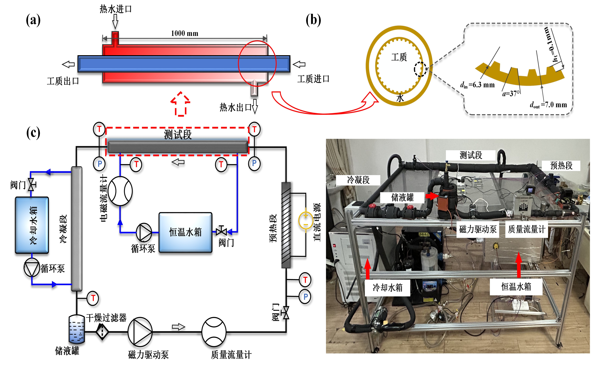
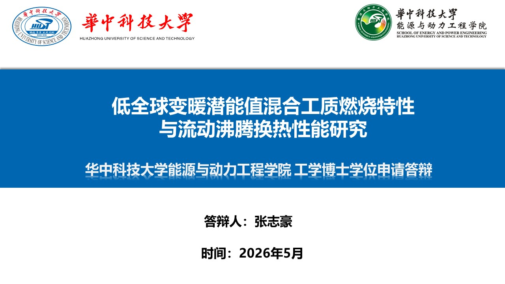
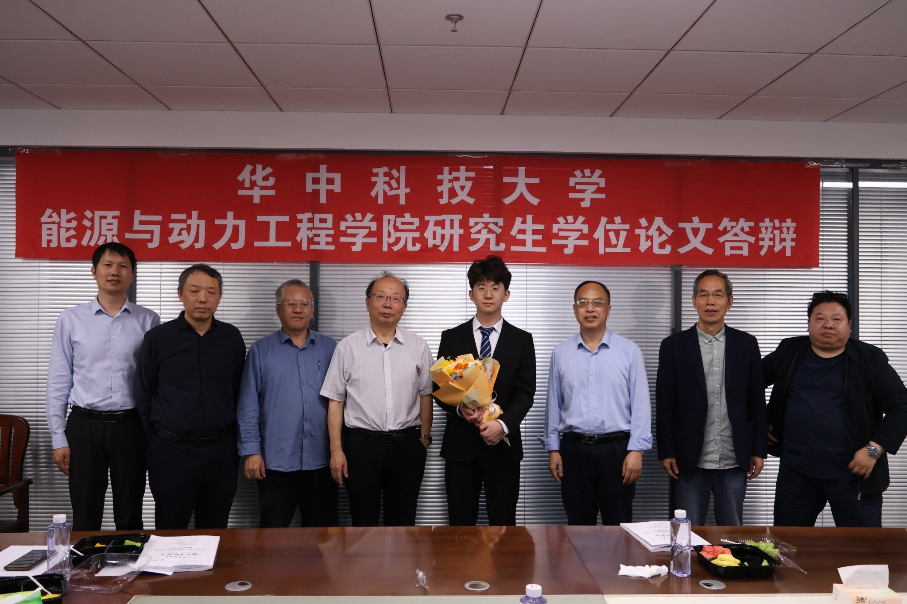
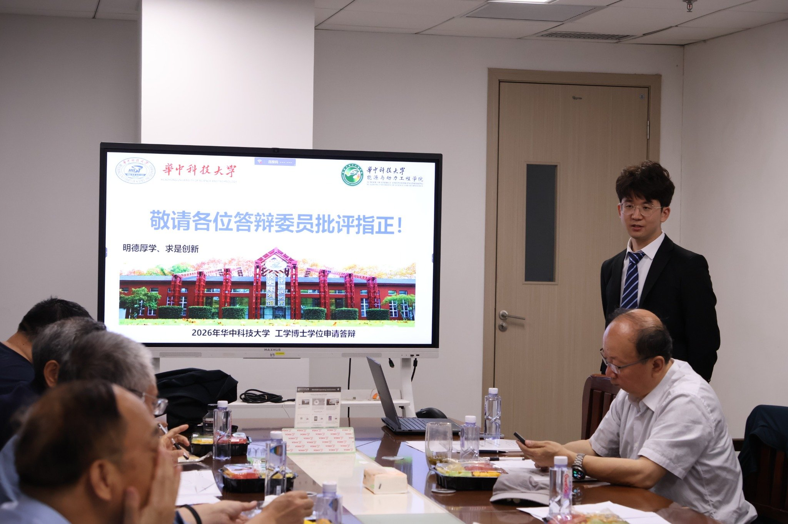
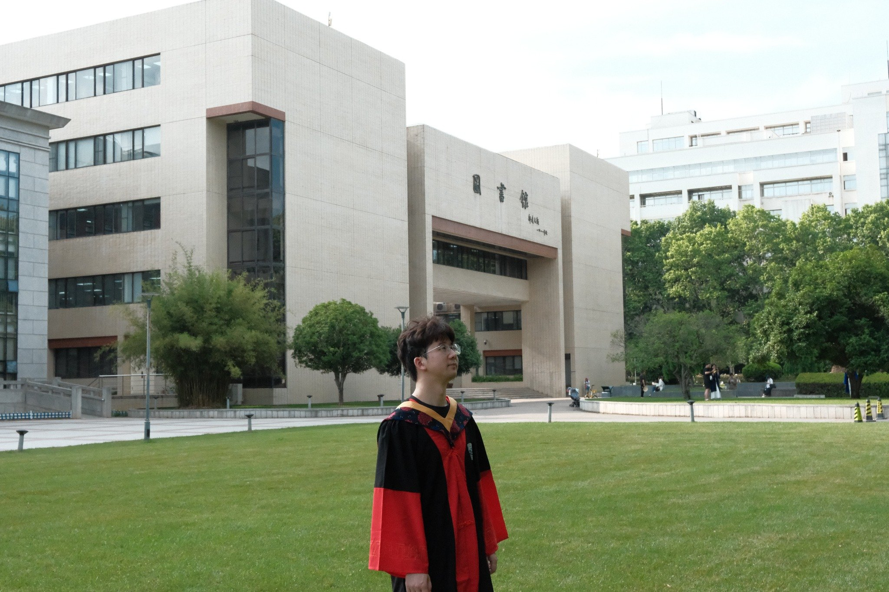
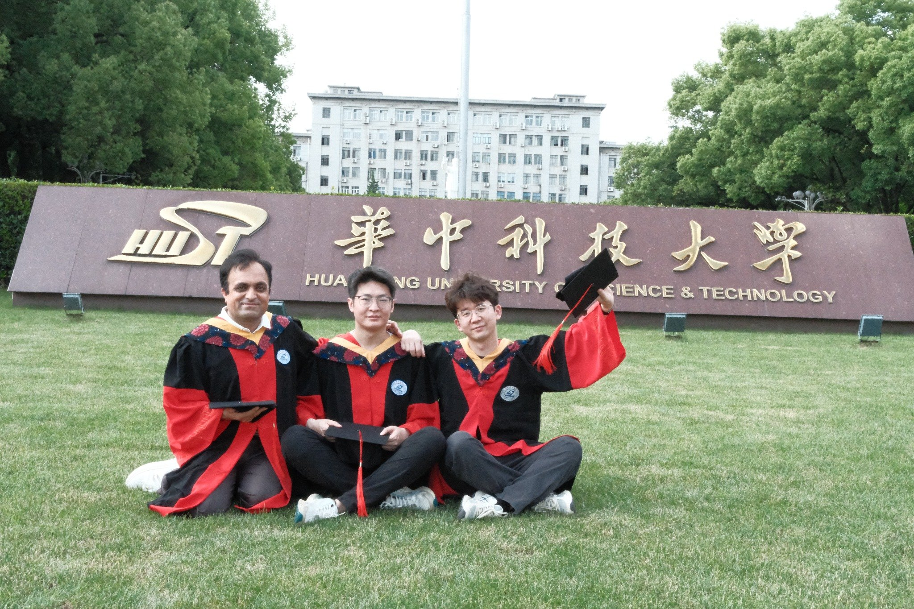
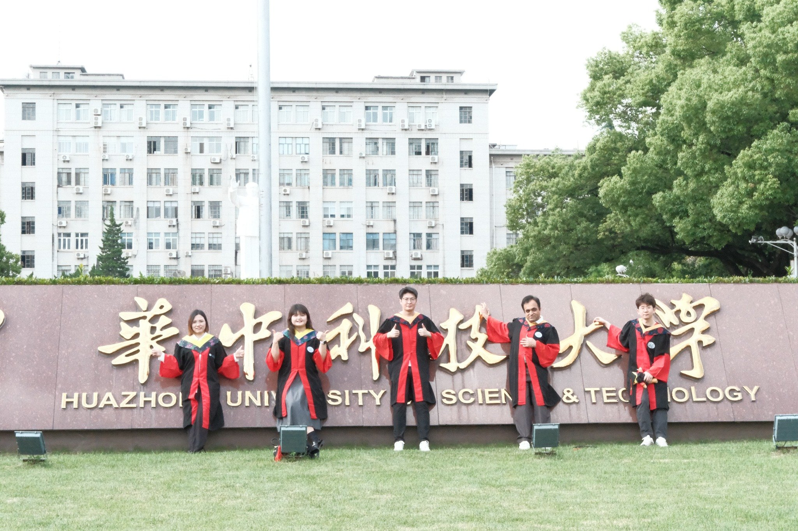

研究方向
能源动力、制冷与热管理、新型环保制冷剂安全性及高效换热强化技术，关注低GWP工质燃烧特性与两相流传热机理研究
博士研究与成长纪念
低碳制冷 · 安全应用 · 高效换热 面向绿色能源系统的新型环保制冷剂研究Profile
围绕低全球变暖潜能值换热工质的安全性与传热性能，开展面向低碳制冷和绿色能源装备的博士研究
能源动力、制冷与热管理、新型环保制冷剂安全性及高效换热强化技术，关注低GWP工质燃烧特性与两相流传热机理研究
获得国家公派联合培养资格，曾赴日本东京大学开展联合培养研究，拓展了国际化科研视野
曾获国家奖学金、三好学生、华中科技大学优秀毕业生等荣誉，体现了科研训练与综合发展的积累
聚焦低GWP换热工质燃烧特性与流动沸腾换热机理
赴日本东京大学开展交流研究，深化国际合作与方法训练
系统汇报研究成果、创新贡献与工程应用价值
Doctoral Research
低全球变暖潜能值换热工质燃烧特性与流动沸腾换热性能研究
围绕新型低GWP环保制冷剂的燃烧安全性与强化换热机理开展研究，重点关注环保工质在复杂工况下的燃烧行为、两相流动及流动沸腾换热特性，为绿色制冷与高效能源利用提供理论基础与工程参考


回应制冷行业低碳转型需求，探索环保替代工质的基础物性、安全边界与应用潜力
研究低GWP换热工质的燃烧特性，为储运、充注、运行与工程应用提供安全依据
分析新型工质在受限流道中的沸腾换热性能，为高效换热器设计提供理论与数据支撑
PhD Defense
博士答辩是博士阶段的重要总结，展示了研究工作的系统性、创新性和工程应用价值



Graduation Memory
求是创新，砥砺前行。以博士毕业为新的起点，继续面向能源与环境问题探索长期价值




Achievements
以高水平论文、国际化训练和荣誉奖励共同记录博士阶段的科研积累
获得国家公派联合培养资格，赴东京大学开展联合培养研究，提升国际科研交流能力
获联合国环保署与美国暖通空调工程师协会联合颁发创新奖项，体现了制冷与空调技术研究在环保替代工质、安全应用和工程创新方面的价值
博士阶段获得国家奖学金，体现持续科研投入与综合表现
以扎实研究工作与成长成果完成博士阶段培养
在 Applied Thermal Engineering、Energy、Fuel 、International Journal of Refrigeration等期刊发表多篇学术论文